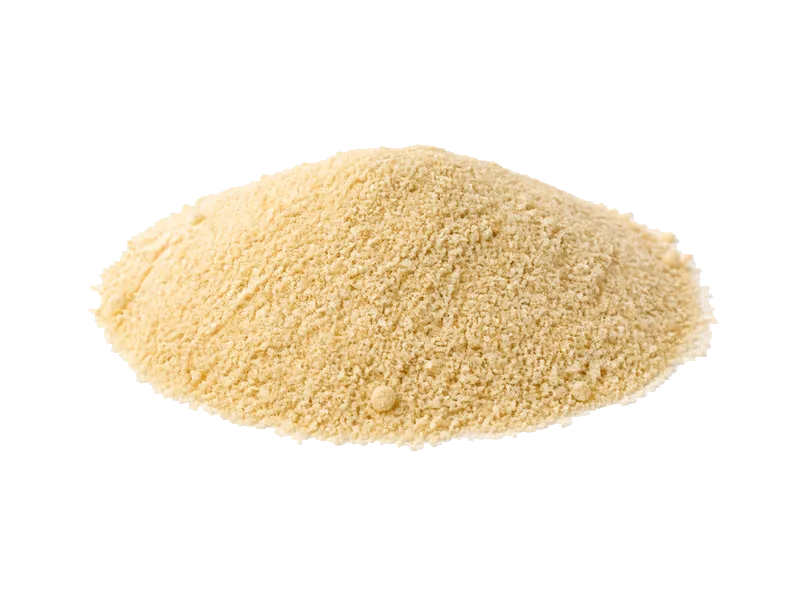

Przyprawy
Czosnek granulowany
Czosnek granulowany: 17 g białka, 331 kcal, 73 g węglowodanów i 0.7 g tłuszczu na 100 g. Kategoria: Przyprawy.
Kalorie331 kcalna 100 g
Białko / proteiny17 g
Węglowodany73 g
Tłuszcz0.7 g
Cena (szac.)~1,90 złza 100 g
Ceny zaktualizowano: sierpień 2026 (szacunek — ceny w popularnych supermarketach)
Porcja: łyżeczka (3 g)
| Kalorie | 10 kcal |
|---|---|
| Białko | 0.5 g |
| Węglowodany | 2.2 g |
| Tłuszcz | 0 g |
| Cena (szac.) | ~0,06 zł |
Szczegółowe składniki odżywcze na 100 g
| Wartość energetyczna (kalorie) | 331 kcal |
|---|---|
| Białko (proteiny) | 17 g |
| Węglowodany | 73 g |
| Tłuszcz | 0.7 g |
| Tłuszcze nasycone | 0.2 g |
| Tłuszcze nienasycone | 0.5 g |
| Witaminy i minerały (skrót) | Mangan, Witamina B6, Witamina K |
| Współczynnik kcal / 1 g białka | 19.5 |
| Cena produktu (szac. za 100 g) | ~1,90 zł |
| Cena za 100 g białka (szac.) | ~11,76 zł |
Witaminy i minerały na 100 g
Ilość w 100 g produktu oraz orientacyjny % dziennego zapotrzebowania (RDA) dla dorosłej osoby. Żelazo wg normy dla kobiet; sód jako % limitu. Wartości typowe (USDA / tabele żywieniowe / etykiety) — mogą się różnić między markami.
-
Witamina A 100 µg
-
Witamina C 31 mg
-
Witamina K 50 µg
-
Witamina B6 1.2 mg
-
Wapń 181 mg
-
Żelazo 8 mg
-
Magnez 100 mg
-
Potas 500 mg
-
Cynk 2 mg
-
Selen 14 µg
-
Miedź 400 µg
-
Mangan 1.7 mg
-
Sód 200 mg